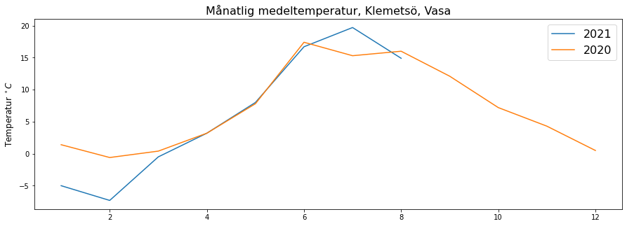
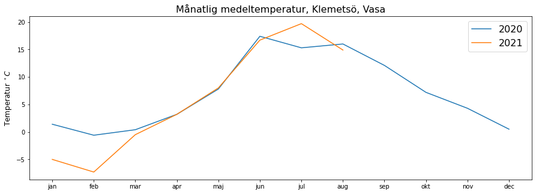
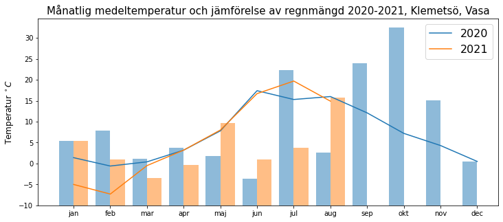

Vår första graf¶
import numpy as np
import pandas as pd
import matplotlib.pyplot as plt
k2021 = pd.read_csv("https://raw.githubusercontent.com/Lahammar/sharing/main/OpenData/Files/klemetso2021.csv")
k2021.head()
| Vuosi | Kk | Pv | Klo | Aikavyöhyke | Kuukauden sadesumma (mm) | Kuukauden keskilämpötila (degC) | |
|---|---|---|---|---|---|---|---|
| 0 | 2021 | 1 | 1 | 00:00 | UTC | 51.2 | -5.0 |
| 1 | 2021 | 2 | 1 | 00:00 | UTC | 36.3 | -7.3 |
| 2 | 2021 | 3 | 1 | 00:00 | UTC | 21.6 | -0.5 |
| 3 | 2021 | 4 | 1 | 00:00 | UTC | 32.4 | 3.2 |
| 4 | 2021 | 5 | 1 | 00:00 | UTC | 65.6 | 8.0 |
k2021["Kuukauden keskilämpötila (degC)"]
0 -5.0
1 -7.3
2 -0.5
3 3.2
4 8.0
5 16.7
6 19.7
7 14.9
Name: Kuukauden keskilämpötila (degC), dtype: float64
np.mean(k2021["Kuukauden keskilämpötila (degC)"]) # årsmedeltemperatur
6.2124999999999995
plt.plot(k2021["Kk"], k2021["Kuukauden keskilämpötila (degC)"])
[<matplotlib.lines.Line2D at 0x7f8269e77c70>]

k2020 = pd.read_csv("https://raw.githubusercontent.com/Lahammar/sharing/main/OpenData/Files/klemetso2020.csv")
k2020.head()
| Vuosi | Kk | Pv | Klo | Aikavyöhyke | Kuukauden sadesumma (mm) | Kuukauden keskilämpötila (degC) | |
|---|---|---|---|---|---|---|---|
| 0 | 2020 | 1 | 1 | 00:00 | UTC | 51.2 | 1.4 |
| 1 | 2020 | 2 | 1 | 00:00 | UTC | 59.4 | -0.6 |
| 2 | 2020 | 3 | 1 | 00:00 | UTC | 37.2 | 0.4 |
| 3 | 2020 | 4 | 1 | 00:00 | UTC | 46.1 | 3.2 |
| 4 | 2020 | 5 | 1 | 00:00 | UTC | 39.5 | 7.8 |
plt.figure(figsize=(15,5))
plt.plot(k2021["Kk"], k2021["Kuukauden keskilämpötila (degC)"], label = "2021")
plt.plot(k2020["Kk"], k2020["Kuukauden keskilämpötila (degC)"], label = "2020")
plt.title("Månatlig medeltemperatur, Klemetsö, Vasa", fontsize = 16)
plt.ylabel("Temperatur $^\circ C$", fontsize = 12)
plt.legend(fontsize = 16)
plt.show()

plt.figure(figsize=(15,5)) # Figurens storlek
plt.plot(k2020["Kk"], k2020["Kuukauden keskilämpötila (degC)"], label = "2020") # Graf 1
plt.plot(k2021["Kk"], k2021["Kuukauden keskilämpötila (degC)"], label = "2021") # Graf 2
plt.title("Månatlig medeltemperatur, Klemetsö, Vasa", fontsize = 16) # Titel
plt.ylabel("Temperatur $^\circ C$", fontsize = 12) # y-axelns namn
plt.legend(fontsize = 16) # referensruta
plt.xticks(range(1,13), labels= ["jan","feb","mar","apr","maj","jun","jul","aug","sep","okt","nov", "dec"])
plt.show() # Skriver ut grafen snyggare

plt.bar(k2020["Kk"] -0.2 , k2020["Kuukauden sadesumma (mm)"], width = 0.4)
plt.bar(k2021["Kk"] +0.2 , k2021["Kuukauden sadesumma (mm)"], width = 0.4)
<BarContainer object of 8 artists>
plt.figure(figsize=(12,5)) # Figurens storlek
plt.plot(k2020["Kk"], k2020["Kuukauden keskilämpötila (degC)"], label = "2020") # Graf 1
plt.plot(k2021["Kk"], k2021["Kuukauden keskilämpötila (degC)"], label = "2021") # Graf 2
plt.bar(k2020["Kk"] -0.2 , k2020["Kuukauden sadesumma (mm)"]*0.3, width = 0.4, alpha=0.5, bottom = -10)
plt.bar(k2021["Kk"] +0.2 , k2021["Kuukauden sadesumma (mm)"]*0.3, width = 0.4, alpha=0.5, bottom = -10)
plt.title("Månatlig medeltemperatur och jämförelse av regnmängd 2020-2021, Klemetsö, Vasa", fontsize = 15) # Titel
plt.ylabel("Temperatur $^\circ C$", fontsize = 12) # y-axelns namn
plt.legend(fontsize = 16) # referensruta
plt.xticks(range(1,13), labels= ["jan","feb","mar","apr","maj","jun","jul","aug","sep","okt","nov", "dec"])
plt.show() # Skriver ut grafen snyggare
